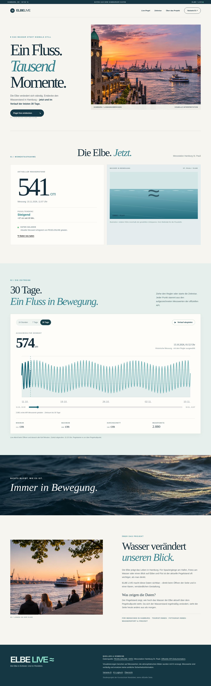
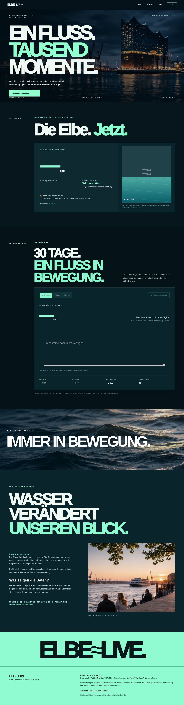

Die Gestaltung und das technische Grundgerüst wurden mit ChatGPT erstellt. Die offizielle API-Dokumentation wurde geprüft; die Frontend-Funktionen wurden lokal mit simulierten Messdaten getestet. Ein echter HTTP-200-Nachweis auf der veröffentlichten GitHub-Pages-Seite sowie zwei zeitlich getrennte reale Messungen stehen noch aus. Die fehlenden Nachweise müssen nach dem Upload persönlich ergänzt werden. Eigene Änderungen und persönliche Präferenz ebenfalls selbst dokumentieren.
TEIL A / ENTSTEHUNG
Wie die Varianten entstanden sind
Verwendete Werkzeuge: ChatGPT für Konzeption, Texte, HTML/CSS/JavaScript, Bildgenerierung und Prüfung der Bedienbarkeit. Bildmaterial: vier mit KI generierte Visualisierungen, keine dokumentarischen Fotos. Die folgenden Prompts sind wörtliche, tatsächlich gesendete Nutzereingaben aus dem Projektverlauf. Die Eingaben waren auf Arabisch; die Projektdokumentation und Website-Texte wurden auf Deutsch erstellt.
Variante A – fünf zentrale Prompts
A01 / ORIGINAL-PROMPT
هل فيك تعملي رقم ١٠ من الصفر كلشي انا مابعرف ابدا اترجم
Ergebnis: Auswahl und deutsche Ausarbeitung des fiktiven Produkts ELBE LIVE, Station Hamburg St. Pauli.
A02 / ORIGINAL-PROMPT
هل فيك تعطيني المجلدات كامله جاهزه و انا ارفعها على github وبس
Ergebnis: Erste vollständige HTML/CSS/JavaScript-Dateistruktur als GitHub-Pages-Projekt.
A03 / ORIGINAL-PROMPT
بس مافي صور و لاشي، هل انت ملاقي الفكره منيحه ؟؟
Ergebnis: Kritik der ersten bildarmen Gestaltung; stärkere fotografische Hero-Inszenierung beschlossen.
A04 / ORIGINAL-PROMPT
هل فيك تنشئ لي الصوره
Ergebnis: KI-generiertes Hamburg-Sonnenuntergangsmotiv als editorialer Hero für Variante A.
A05 / ORIGINAL-PROMPT
طيب سويلي المطلوب بمجلد مشان ارفعه على github
Ergebnis: Zusammenführung von Foto, Datenvisualisierung, Timeline und Dokumentation in einem Repository.
Variante B – fünf zentrale Prompts
B01 / ORIGINAL-PROMPT
بس الاستاذ بده شي متغير يعني متل الطقس لما تحطه على الساعه ٢ غير الساعه ٤ و هيك
Ergebnis: Die Daten müssen bei erneutem Abruf tatsächlich neue Messzeiten und Wasserstände zeigen.
B02 / ORIGINAL-PROMPT
طيب مافينا نعمل متل timeline بيتحرك انو كيف كان اخر شهر و هيك
Ergebnis: Animierbare Zeitreise mit Play/Pause, Slider, echten Messwerten und 24h/7d/30d-Umschaltung.
B03 / ORIGINAL-PROMPT
طيب مشان الصور شو الصور الازمه
Ergebnis: Bildkonzept aus Hero, Nachtmotiv, Wassertextur und Elbpromenade.
B04 / ORIGINAL-PROMPT
و الباقي ؟
Ergebnis: Weitere Bildvarianten für Dark Mode und Story-Bereich, inkl. Nachtstimmung.
B05 / ORIGINAL-PROMPT
طيب سويلي المطلوب بمجلد مشان ارفعه على github
Ergebnis: Technische Zusammenführung der dunklen Variante mit derselben Datenbasis und denselben deutschen Inhalten.
VARIANTE A / EDITORIAL
Ruhig, hell, nahbar
Ziel: Informationsdesign mit warmen Flächen, Georgia-Serif und einem KI-generierten Elbe-Sonnenuntergang als Hero.
Gestaltung: Zweigeteilter Hero, viel Weißraum, klassisches Editorial-Raster, blaue Wasserfläche und eine ruhige Zeitverlaufs-Karte.
Daten: Die aktuelle Messung und die Zeitreise stammen aus genau derselben API wie in Variante B.
Übernommen: Konzept ELBE LIVE, deutsche Landingpage-Texte, zwei responsive Layouts, KI-generierte Bildmotive, Pegelanzeige, Diagramm und Zeitreise.
Verworfen/korrigiert: Ein früher API-Entwurf enthielt einen Platzhalter für die URL und nahm ein nicht dokumentiertes Feld data.trend an. Stattdessen werden dokumentierte Endpunkte benutzt und die Tendenz aus realen Messwerten berechnet. Eine rein text- und zahlenorientierte erste Gestaltung wurde um Bilder und die interaktive Zeitreise erweitert.
Manuell selbst geändert: Bisher keine eigenständigen Änderungen durch die Projektinhaberin dokumentiert. Vor der Abgabe tatsächliche eigene Entscheidungen und Bearbeitungen eintragen.
Wo hat KI die Arbeit erschwert?
Die anfängliche technische Lösung war unvollständig und ein erstes Design visuell zu nüchtern. Der Bedarf an echten Bildern, einer beweglichen Timeline und einer echten API-Prüfung entstand erst durch die kritischen Nachfragen und Überarbeitungswünsche.
Vergleich und persönliche Auswahl
A nutzt ein helles, redaktionelles Raster und wärmere Bildwelt; B nutzt ein dunkles, immersives Raster, großzügige Bildflächen und kräftige Mint-Akzente. Persönlicher Favorit und Grund: vor der Abgabe selbst eintragen.
TEIL B / API
Welche Daten? Welche Wirkung?
API und genaue URL
PEGELONLINE REST-API v2 der Wasserstraßen- und Schifffahrtsverwaltung des Bundes (WSV). Station HAMBURG ST. PAULI, Nummer 5952050, UUID d488c5cc-4de9-4631-8ce1-0db0e700b546.
Aktueller Messwert: value = Wasserstand in cm über Pegelnullpunkt; timestamp = tatsächlicher Zeitpunkt als ISO-8601-Zeitstempel mit Zeitzonenoffset. Historie: Array aus timestamp und value. Es ist eine Pegelhöhe, keine tatsächliche Wassertiefe.
Wie oft ändern sich die Werte?
Die offizielle API stellt laufend neue Messwerte zur Verfügung. Die Messhäufigkeit ist stationsabhängig; die Projektseite fragt beim Öffnen, beim Zurückkehren zum Tab und automatisch alle fünf Minuten neu ab. Ein echter Vergleich zweier Abrufe im Stundenabstand ist nach der Veröffentlichung nachzutragen.
Was bewirkt die API?
Aktueller Pegel, Zeitstempel, Tendenz aus früheren Vergleichsmessungen, Minimum, Maximum, Durchschnitt und Anzahl der Werte werden live berechnet. Die Buttons wechseln zwischen 24h, 7 Tagen und 30 Tagen. Die Timeline erlaubt das Ziehen auf einen historischen Zeitpunkt und das animierte Abspielen. Die Wasserillustration reagiert auf den ausgewählten Messwert; die Tendenzfarbe reagiert auf steigende oder fallende Werte.
Lade- und Fehlerfälle
Ein Ladehinweis erscheint beim Start. Wenn die aktuelle API ausfällt, erscheint eine konkrete Fehlermeldung und eine Schaltfläche zum erneuten Laden. Fällt die Historie aus, bleibt der unabhängige aktuelle Wert sichtbar, sobald er verfügbar ist. Die Seite zeigt keine erfundenen Wasserstände.
Quelle, Lizenz, Gestaltung
Die Datenquelle PEGELONLINE / WSV und der Link zur offiziellen Dokumentation stehen auf beiden Varianten. Die API ist kostenfrei ohne API-Key nutzbar. Die vier Bilder wurden mit KI erstellt und werden entsprechend ausgewiesen. Die Webseite verwendet noindex sowie robots.txt.
TEIL C / TESTS
Kontrollen und offene Nachweise
DOKUMENTATION / GEPRÜFT
Offizielle URL und 30 Tage
Die Dokumentation erlaubt Messwerte für bis zu 31 Tage rückwirkend. Stations-UUID und JSON-Struktur wurden anhand der WSV-Dokumentation recherchiert.
Das Frontend wurde mit simulierten JSON-Messwerten auf Desktop und Mobilgerät geprüft. Der Test belegt die Funktion der Oberfläche, nicht die öffentliche API-Erreichbarkeit.
Veröffentlichte Seite öffnen → F12 → Network → neu laden. PEGELONLINE-Abfrage und JSON-Antwort fotografieren. Den Nachweis hier ergänzen.
Screenshot noch erforderlich
ECHTTEST / NACH UPLOAD
Zwei reale Messzeitpunkte
Messwert und Messzeit unmittelbar nach dem Upload festhalten. Nach mindestens einer Stunde erneut abrufen, Unterschiede dokumentieren und Screenshots einfügen.
Screenshot noch erforderlich

Lokaler UI-Test mit simulierten, ausdrücklich nicht echten API-Messungen. Testdaten werden im veröffentlichten Projekt nicht ausgeliefert.

Simulierter Fehlerzustand. Keine echte API-Verbindungsprüfung.
Persönlich vor der Abgabe ergänzen: echte Netzwerk-Screenshots und ein zweiter Abruf nach einer Stunde; eigene Anpassungen an Code, Design oder Text; begründete Lieblingsvariante. Prüfen, dass beide Seiten und dieses Logbuch ohne Anmeldung erreichbar sind.